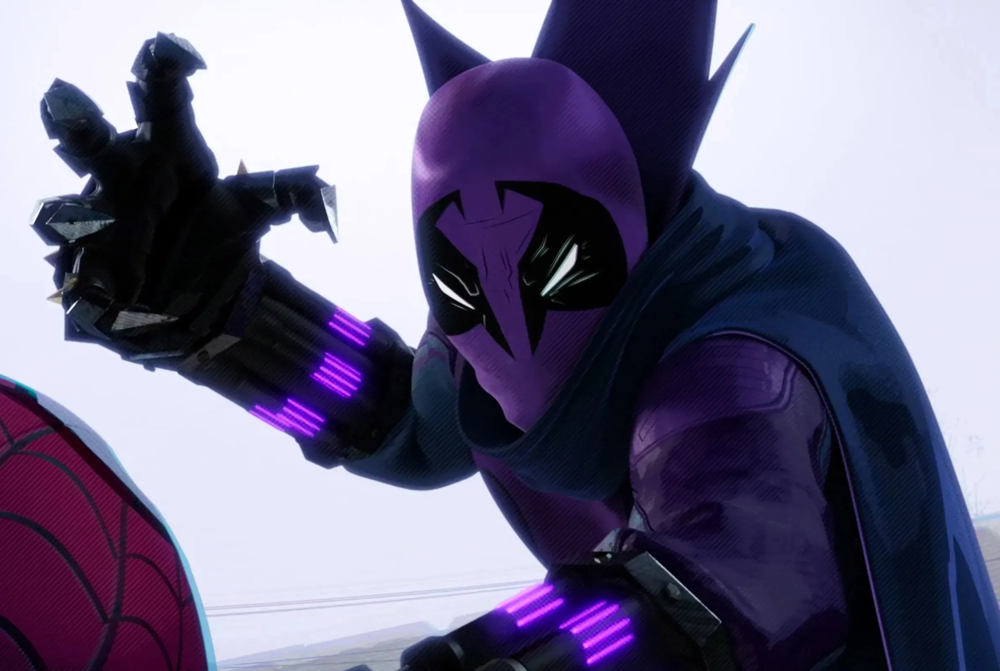

Junte-se à Revolução
Prowler, o robô de combate projetado para liderar as batalhas com precisão e força incomparáveis.

Prowler, o robô de combate projetado para liderar as batalhas com precisão e força incomparáveis.
Se você é um entusiasta de batalhas de robôs, o Prowler foi criado para você! O Prowler é um robô de combate que vai te levar para o coração da ação. Projetado para a batalha, ele combina força, agilidade e inteligência para vencer qualquer desafio.
A inovação está no coração do nosso robô, com sistemas avançados que garantem uma performance otimizada e uma abordagem única para as batalhas mais complexas.
Projetado para suportar os desafios mais extremos, nosso robô possui uma estrutura robusta e durável que garante desempenho contínuo mesmo nas condições mais adversas.
Com motores de alta potência e qualidade, nosso robô atinge velocidades impressionantes, permitindo movimentos rápidos e precisos em qualquer competição.
Além de ser potente, o Prowler tem um design moderno e agressivo, que pode ser personalizado para refletir o seu estilo de batalha.
O Prowler é um robô de batalha desenvolvido pela Clube da Luta, uma startup focada em robótica educacional. Ele é a ferramenta perfeita para aprender sobre robótica, programação e mecânica, além de ser uma plataforma de competições emocionantes.
O Prowler é perfeito para: Fãs de Robótica: para quem adora construir, programar e competir. Amantes de Ação e Tecnologia: para vivenciar emoções fortes e testemunhar o poder da robótica.
O Clube da Luta é uma startup dedicada ao desenvolvimento de robôs de combate de alta performance. Iniciada em 2024 com o projeto RoboCup, nossa equipe transformou desafios em oportunidades, criando robôs que refletem paixão e excelência. O Prowler, nosso projeto mais avançado, simboliza essa experiência, posicionando-nos como uma força crescente no mercado global de robótica.
O mercado global de robótica está em crescimento acelerado, com estimativa de atingir 9,9 bilhões de dólares até 2032, impulsionado pelo crescimento de setores como o da indústria e da automação. O Clube da Luta está posicionado para capturar uma parte significativa desse mercado, com o objetivo de alcançar 5% do market share, estabelecendo o Prowler como líder no segmento de robôs de combate.
Aprendizagem Divertida: O Prowler torna o aprendizado de robótica mais divertido e interativo, incentivando a criatividade e o desenvolvimento de habilidades valiosas.
Desenvolvimento de Habilidades Essenciais: Através da construção e programação do Prowler, você desenvolverá habilidades essenciais para o futuro, como lógica, resolução de problemas e trabalho em equipe.
Competições Empolgantes: Com o Prowler, você pode participar de batalhas de robôs emocionantes e desafiadoras, testando seus conhecimentos e habilidades em um ambiente competitivo.
A Clube da Luta, uma startup inovadora no mercado de robótica educacional, convida você a se juntar a uma jornada de sucesso. Nosso robô de batalha Prowler está pronto para revolucionar a indústria, impulsionando o aprendizado e a paixão por robótica em todo o mundo.
Termos e CondiçõesÉ fundamental que você assine um termo de sigilo antes de receber informações mais detalhadas sobre nossas operações e projeções.
Modelo de negócio escalável e sustentável: Nossa startup adota metodologias ágeis e investe em pesquisa e desenvolvimento para criar produtos de alta qualidade, com ciclos de desenvolvimento curtos e custos otimizados.
Saiba Mais